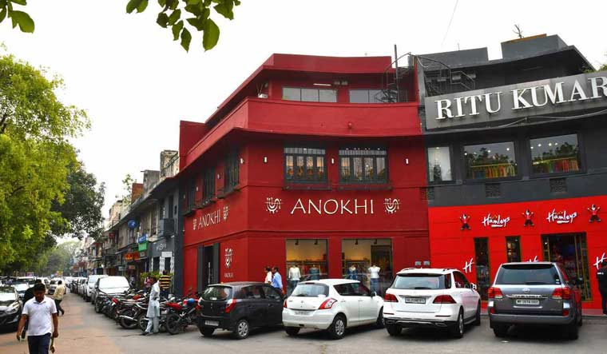

Gurudwara Bangla Sahib
One of the most eminent structures dedicated for the Sikhs, the Gurudwara Bangla Sahib was constructed in the 17th century. Its golden dome with a tall flag (Nisan Sahib) accounts as a chief attraction of this Gurudwara Bangla Sahib.

Agrasen ki Baoli
Agrasen Ki Baoli is a historical monument resembling a massive step-well structure built by Agrasen (the legendary ruler). It has got 103 steps cascading amidst 3 floors and leading towards the basal well. Not to forget the various haunted stories that have been widely associated with this magnificent structure. As you move to the bottom of the well, you will soon realise that you are isolated from the surrounding noise. There is a different sense of thrilling peace right where you could hear nothing except the echo of footsteps.

Connaught Place
Connaught Place has various blocks within 3 layers and is shaped in the form of a horseshoe magnet. Right from monument to art to food to structures to international brands, this place has got everything directly to entertain you.

India Gate
The India Gate is a war memorial located astride the Rajpath, on the eastern edge of the "ceremonial axis" of New Delhi, formerly called Kingsway. It stands as a memorial to 70,000 soldiers of the British Indian Army who died in between 1914 and 1921 in the First World War, in France, Flanders, Mesopotamia, Persia, East Africa, Gallipoli and elsewhere in the Near and the Far East, and the third Anglo-Afghan War.